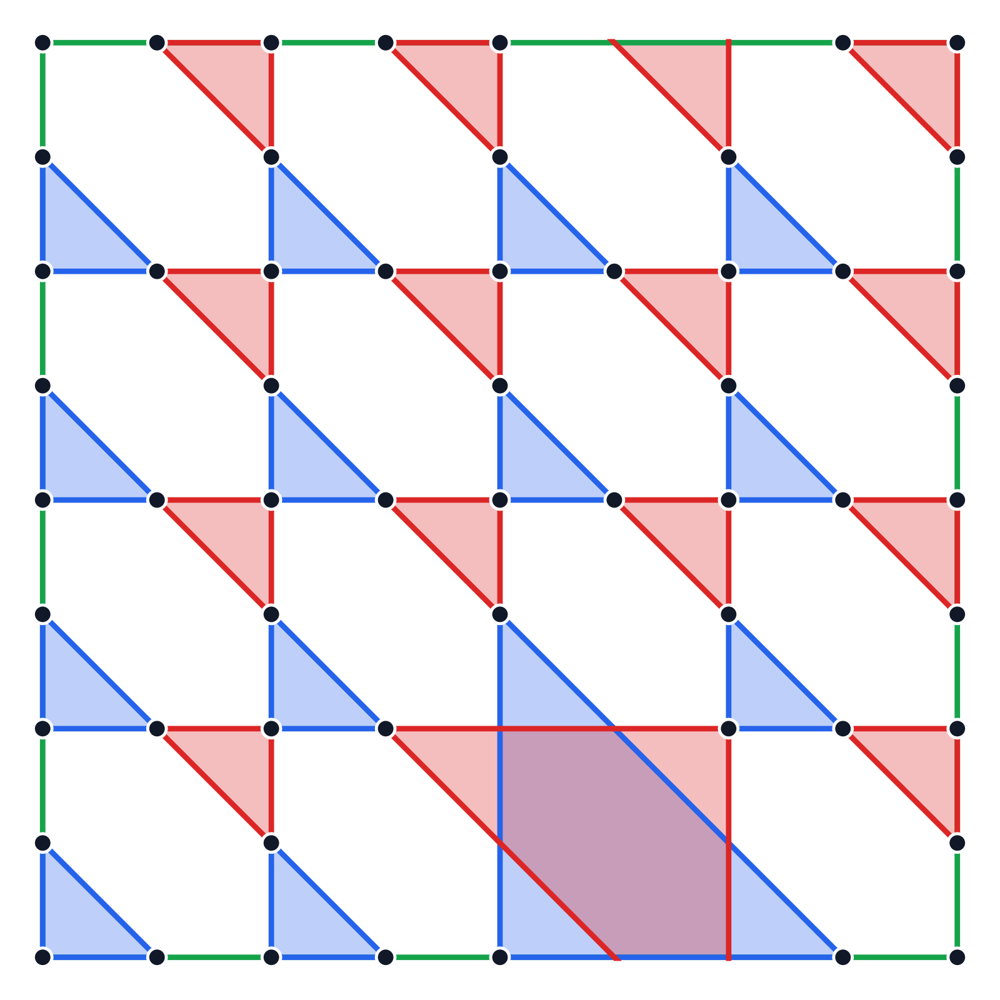

Polygon used for every displayed ruling
SL(2,Z) representative: Conv{(-2,-1), (2,-1), (-2,3)}
vertical direction: (-1,2)
Selected Newton polygons with more than two interior lattice points. Choose a polygon to see its rulings in every genus.
Each card uses the same representative and vertical direction as all ruling figures in its detail view.
SL(2,Z) representative: Conv{(-2,-1), (2,-1), (-2,3)}
vertical direction: (-1,2)
| Genus | Total | Saved figures here |
|---|---|---|
| 3 | 1 | 1 |
| 2 | 16 | 1 symmetry representative |
| 1 | 104 | 6 symmetry representatives |
| 0 | 304 | 13 symmetry representatives |
Switches are the black points. Each multiplicity below is the size of that figure's symmetry orbit in the fixed degree-four diagram.




These figures use direct ruling certificates in the fixed v = (-1,2) chamber. The single genus-two all-disk orbit represents all 16 genus-two rulings, and an exhaustive exact annular search gives zero additional genus-two rulings. The six genus-one all-disk orbits represent all 104 genus-one rulings, again with zero annular rulings. In genus zero, the twelve D-orbits represent 288 all-disk rulings and R01 represents 16 annular rulings.
SL(2,Z) representative: Conv{(0,0), (4,0), (4,2), (0,2)}
source-to-count matrix: [[1,-1], [1,0]]
vertical direction: (1,1)
| Genus | Total | Saved figures here |
|---|---|---|
| 3 | 1 | 1 |
| 2 | 16 | 1 symmetry representative |
| 1 | 96 | 7 symmetry representatives |
| 0 | 256 | 11 symmetry representatives |
These figures are direct ruling certificates in one fixed, equally spaced 8-by-4 diagram. The complete no-cutoff annular-phase audit gives zero annular rulings in every genus. The displayed symmetry representatives account for all 1, 16, 96, and 256 rulings in genera 3, 2, 1, and 0, respectively.